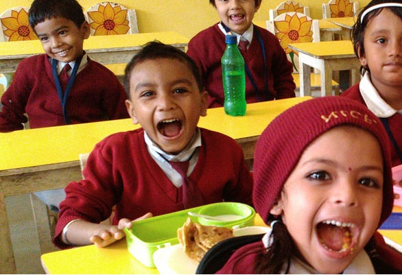
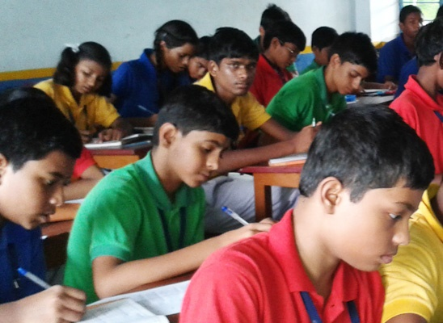
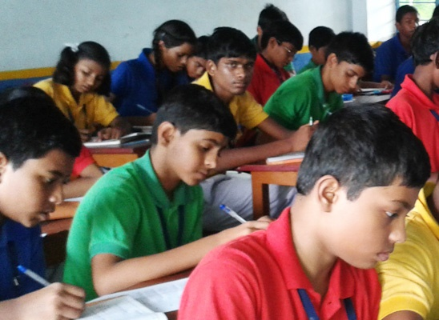

About Us

Sant Nandlal Smiriti Vidya was founded on 12th May, 1986 by Shree Satsang Sadan, Kolkata, which is a registered
society. This society is engaged in imparting philanthropic ideals for attainment of peace and tranquility.
Sant NandLal was an ideal teacher for his students and an omnipresent source of inspiration to his disciples. He
believed that only true knowledge could make a man free and complete.
Class Rooms

Bright, neat, Spacious and airy classrooms are provided in accordance with the age group of the
children to facilitate effective curriculum transaction. There are approximately 40 children in each class. There are soft
boards for each class where children put up their art, crafts, project charts etc.
We believe in imparting moral and cultural values in a playful and interesting way through vibrant atmosphere of classrooms
thus reducing gap between teaching and learning.
Community Service

SNSVM not only believes in imparting education to the children of Ghatsila but also
owns the responsibility towards the people of Ghatsila
Various eye camps, health check ups and general awareness programs as Vigilance awareness week ,
Road Safety week etc are hosted by the school for the benefit of the people. These programs involve our teachers, students and management.
Annually the Children’s and teachers donate old clothes and the old books to the rural areas
for the benefits of the weaker sections of the society.
Exhibitions & Competitions

All students are divided into four houses namely Nand, Anand, Dayanand and Sadanand where regular
competitions like debates, art & craft, essay writing, sports, elocution, quiz and many more events are held to provide a healthy platform
to our children to realize their talents and boost their morale.
Our school is an active participant in various interschool competitions of state and national levels like Olympiad,
All India Hope Talent Contest, NSTSE, NTSE CBSE Science Exhibition, CBSE Painting Competition, CBSE Expression Series
etc and students are always awarded with many prizes.
Copyright ©Ayush Das 2 :-X D. All Rights Reserved.
Community Service
SNSVM not only believes in imparting education to the children of Ghatsila but also
owns the responsibility towards the people of Ghatsila
Various eye camps, health check ups and general awareness programs as Vigilance awareness week ,
Road Safety week etc are hosted by the school for the benefit of the people. These programs involve our teachers, students and management.
Annually the Children’s and teachers donate old clothes and the old books to the rural areas
for the benefits of the weaker sections of the society.
Exhibitions & Competitions

All students are divided into four houses namely Nand, Anand, Dayanand and Sadanand where regular
competitions like debates, art & craft, essay writing, sports, elocution, quiz and many more events are held to provide a healthy platform
to our children to realize their talents and boost their morale.
Our school is an active participant in various interschool competitions of state and national levels like Olympiad,
All India Hope Talent Contest, NSTSE, NTSE CBSE Science Exhibition, CBSE Painting Competition, CBSE Expression Series
etc and students are always awarded with many prizes.
Copyright ©Ayush Das 2 :-X D. All Rights Reserved.
Community Service